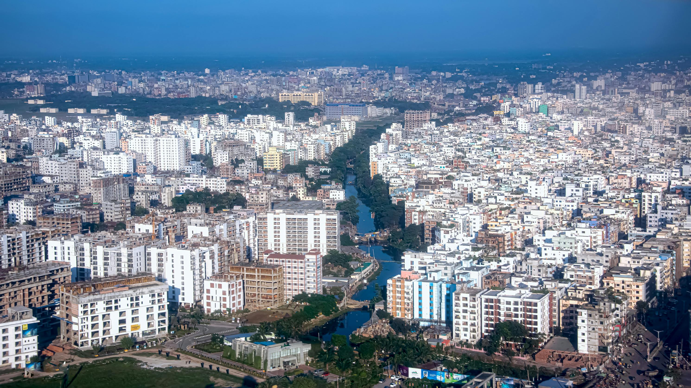
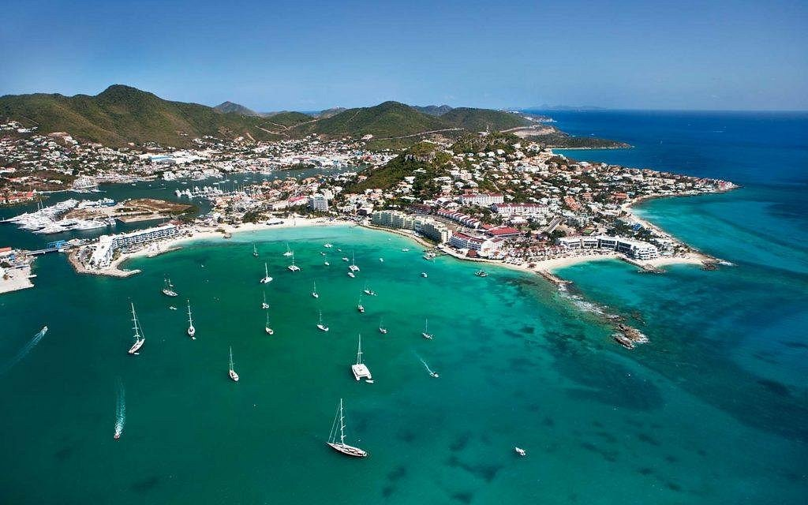
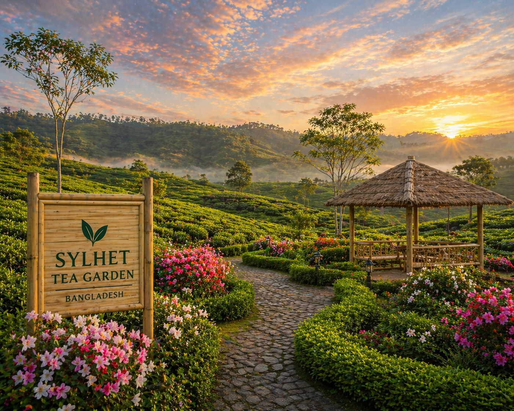

Geschichte
Bangladesch gehörte bis 1947 zu Indien. Später gehört es zu den Ostpakistan. Ostpakistan und Westpakistan hatten gemeinsame Religion, den Islam, aber unterschiedliche Sprachen und Kulturen. Westpakistan wollte Urdu als Staatssprache, aber 1956 erreichte Ostpakistan, dass auch Bengalisch als zweite Staatssprache anerkannt wurde. Ostpakistan produzierte Reis und Jute, welche dem Westpakistan zugutekam. Westpakistan sicherten sie Ostpakistan nicht mit ihrem Militär. Daher kam zum Krieg zwischen den zwei Ländern. Indien unterstützte Bangladesch und das Land erlangte am 16. Dezember 1971 die völkerrechtliche Unabhängigkeit und gab den Namen Bangladesch.
Danach wurde Bangladesch mit dem Premierminister Majibur Rahman eine parlamentarische Demokratie. Er gründete die Awami-Liga, welche ein Ein-Parteien-Regime ist. Leider wurde er am 15. August 1975 umgebracht, samt all seiner Familienmitglieder, außer seiner Tochter. Sie überlebte, weil sie während dieser Zeit im Ausland war. Dann kam Ziaur Rahman an die Macht und gründete, BNP (Bangladesch nationalistische Partei). 1981 wurde Zia umgebracht und 1982 kam sein Nachfolger, namens Hossain Mohammad Ershad. Er gründete 1986 die Jatiya Party und regierte bis 1990. Von da an wurde Bangladesch abwechselnd, von der Witwe Khaleda Zia, die Frau von Ziaur Rahman und von der Hasina Wajed, welche die Tochter von Majibur Rahman ist. Seit 2008 regiert bis heute nur sie.
Sehenswürdigkeiten
Dhaka

Hier gibt es viele Möglichkeiten, die man machen kann. Die Stadt besichtigen, sich unterhalten, essen und einkaufen. Man sollte auf jeden Fall in Dhaka einkaufen gehen, weil dort sehr viele Produkte vorhanden sind. Am besten geht man zu den größten Einkaufszentren. Die Qualität ist super und es ist viel billiger als in den westlichen Ländern.
Cox Bazar

Es ist der längste Strand der Welt. Es ist eine Attraktion für Touristen. Dort gibt es eine atemberaubende Landschaft.
Sylhet Teegarten

Diese Stadt ist bekannt für ihre Teeplantagen und Wasserfälle. Viele Bewohner von dort leben in England. Nur sehr wenige Menschen können dort richtig Bengalisch sprechen, weil sie lieber in Sylethi sprechen.
Weitere Sehenswürdigkeiten
- Shahid Minar
- Lalbag Fort
- Baitul Mukarram Moschee
- Hatirjheel
- Star Moschee
- National Botanical Garden
- Liberation War Museum
- Jamuna Future Park
- New Market